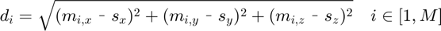
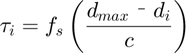
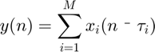

Delay and Sum Beamformer
Simple algorithm to beamform on a point in R^3. Calculates the distances of all microphones to a sound source and applies a delay to each in reference to the closest as the time difference of arrival of the target waveform.
Syntax
|y = dsb(x, xPrev, fs, s, m, c, iw)|
Inputs
- x - Matrix of raw audio data, each column a mic array track
- xPrev - Matrix of audio data from a previous window. This data allows for real data to be padded at the front of each shifted track in the DSB algorithm. Simply supply zeros if no previous data exists.
- fs - Audio sampling rate (Hertz)
- s - 3x1 source location point (col vector) (meters)
- m - column matrix of 3D mic positions (meters)
- c - speed of sound (meters/sec)
- iw - (optional) if set to 1, the dsb will apply an inverse distance weighting on the microphones, useful for near-field/immersive applications. Any other value or its absense will result in the uniform weight dbs.
Outputs
- y - Beamformed output track
Written by Phil Townsend (jptown0@engr.uky.edu) January 23, 2008 Updated August 2014 by Kevin D Donohue to include inverse distance weighting option
Contents
Function Declaration
function y = bfDSB(x, xPrev, fs, s, m, c, iw)
Argument Error Checking
if nargin == 6 iw = 0; % Set flag to no weighting end if isempty(x) || ~isreal(x) || ~all(all(isfinite(x))) error('x must be a real matrix') elseif isempty(xPrev) || ~isreal(xPrev) || ~all(all(isfinite(xPrev))) error('xPrev must be a real matrix') elseif isempty(fs) || ~isreal(fs) || ~isscalar(fs) || ~isfinite(fs) ... || fs <= 0 error('fs must be positive real scalar'); elseif isempty(s) || ~isreal(s) || ~all(isfinite(s)) || size(s,1) ~= 3 ... || size(s,2) ~= 1 || length(size(s)) ~= 2 error('s must be a real 3x1 vector'); elseif ~isreal(m) || ~all(all(isfinite(m))) || size(m,1) ~= 3 error('m must be a real matrix with 3 rows') elseif isempty(c) || ~isreal(c) || ~isscalar(c) || ~isfinite(c) || ... c <= 0 error('c must be positive real scalar'); end
Error using bfDSB (line 44) Not enough input arguments.
Setup
Initialize vars and get some information about the target audio
N = size(x,1); % total number of samples in each audio track M = size(x,2); % number of microphones in the array xShift = zeros(N, M); % initialize shifted track matrix
Beamform
The Delay-Sum Beamformer is the simplest of the beamforming algorithms, delaying each microphone track to bring the target signal into alignment and then adding all tracks together.



% Find the distances of each mic to the source dist = sqrt(sum((m-s*ones(1, size(m,2))).^2, 1))'; if any(dist==0), error('Cant have a source on top of a mic'), end if iw == 1 wghts = arweights(dist); % inverse distance weighting else wghts = ones(size(dist)); % no weighting end % Divide distances by the speed of sound to find duration of travel % for each signal. Take that time relative to the furthest mic, % since all other tracks will be delayed to match the wave that % took the longest to be recieved. t = (max(dist)-dist)/c; % Convert TDOA to integer delays delays = round(t*fs); % Shift each track. Note that since we're recycling x into % xPrev on the next iteration we won't lose samples at the end % of x in the final track for k=1:size(x,2) xShift(:,k) = wghts(k)*[xPrev(end-delays(k)+1:end, k); x(1:end-delays(k), k)]; end % Sum the delayed tracks and save as the beamformer output y = sum(xShift, 2);
end % function dsb